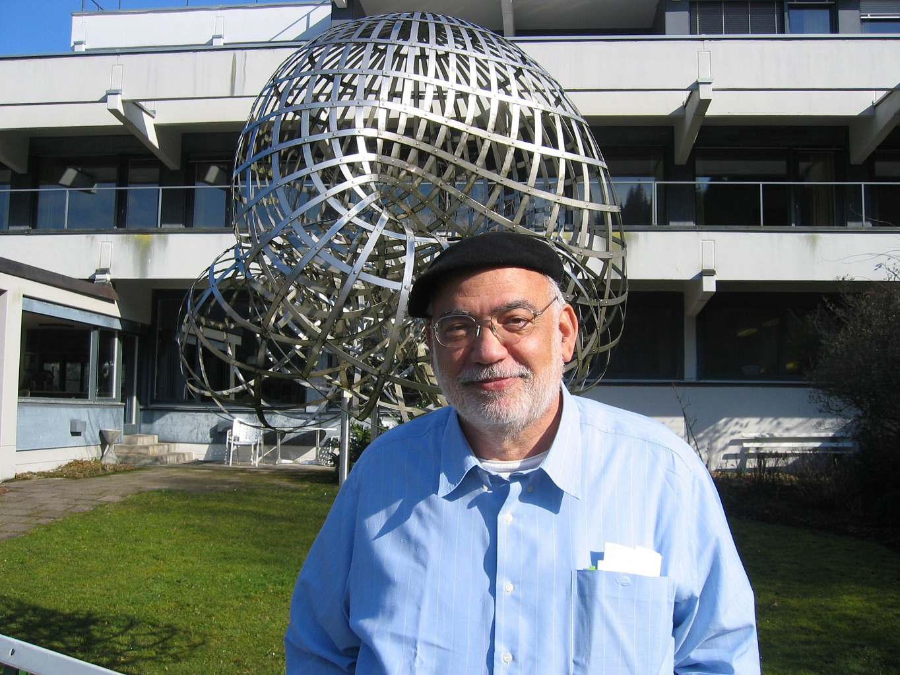

Announcements
We are happy to announce the conference "Harmonic and Complex Analysis: Modern and Classical" dedicated to the memory of Professor Lawrence Zalcman, to be held in Bar-Ilan University, June 18-23, 2023.
The meeting will provide a forum for discussions and exchange of new ideas, perspectives and recent developments in the broad field of Modern Analysis.
The topics to be addressed include (but not restricted to)
- Harmonic and Complex Analysis
- Operator Theory and Nonlinear Analysis
- Quasiconformal Mappings and Geometry
The following institutions have contributed to the organization of this conference: Bar-Ilan University, Braude College,
Holon Institute of Technology and University of South Florida.

Professor Lawrence A. Zalcman (1943-2022)
was born in Kansas City, Missouri (USA) and received his Ph.D. from MIT in 1968, under the supervision of Kenneth Hoffman.
He taught at Stanford University (1968-72) and the University of Maryland (1972-85), joining the Department of Mathematics
of Bar-Ilan University in 1985. His research has dealt with applications of complex analysis and potential theory
to approximation theory, harmonic analysis, integral geometry and partial differential equations; in recent years,
it has focused on the theory of normal families of meromorphic functions and its generalizations. Zalcman served as
Editor of Journal d'Analyse Mathematique from 1987 until 2017. He has received numerous awards for mathematical exposition,
including the Chauvenet Prize in 1976 and three Paul R. Halmos - Lester R. Ford Awards (in 1975, 1981, and 2017).
Sponsors
The conference "Harmonic and Complex Analysis: Modern and Classical" is sponsored by the
ISF - Israel Science Foundation, Bar-Ilan University,
the Gelbart Research Institute for the Mathematical Sciences of Bar-Ilan University,
NSF - the National Science Foundation,
Tel-Aviv University,
H.I.T - Holon Institute of Technology,
the Galilee Research Center for Applied Mathematics of ORT Braude College of Engineering and
IMU - The Israel Mathematical Union.